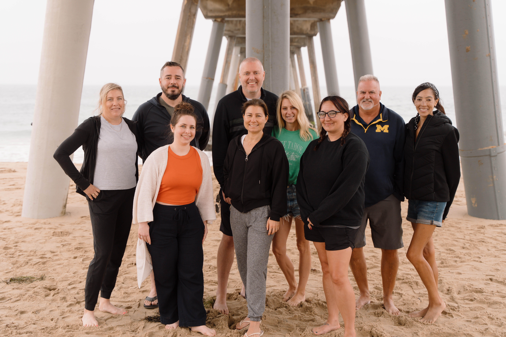

If you're exploring work-from-home business ideas in 2025, virtual bookkeeping deserves serious attention. It's not trendy, it's not seasonal, and it doesn't rely on luck. It's a stable, service-based business that small businesses have always needed — and always will.
I started Booming Bookkeeping Business because I saw how many people were chasing complicated, risky opportunities when one of the most reliable paths to flexible income was sitting right in front of them. Bookkeeping isn't glamorous. That's exactly what makes it such a solid foundation for a real business.
The Demand Is Real and Consistent
Every small business — every restaurant, freelancer, contractor, retail shop, and service provider — needs its books kept. Most of them can't afford a full-time employee to do it, and most of them don't want to do it themselves. That's where virtual bookkeepers come in. You work with multiple clients simultaneously, each on a monthly retainer, building predictable recurring income that grows as your client list grows.
This demand doesn't fluctuate with the stock market or the latest tech cycle. As long as there are small businesses, there will be a need for bookkeeping. That stability is one of the most underrated aspects of this opportunity.
The Income Potential Is Substantial
Virtual bookkeepers typically charge clients on a monthly retainer — anywhere from a few hundred to over a thousand dollars per client per month, depending on the complexity of their books and the volume of transactions. With even five to ten clients, you're looking at a meaningful full-time income without the overhead of traditional employment.
The model scales naturally. Every client you add increases your monthly revenue without proportionally increasing your costs. Over time, many bookkeepers also have the option to raise rates, hire subcontractors, or specialize in niches that command premium pricing.
The Lifestyle Benefits Are Tangible
Students in our community often describe the lifestyle change as the most impactful part of building a bookkeeping business. Working from home means eliminating the commute, setting your own schedule, and being present for the things in your life that matter. Many of our students are parents who wanted to work during school hours, or individuals who simply wanted to stop trading time for a fixed paycheck.
Virtual bookkeeping is also genuinely location-independent. Your clients don't need you in person. You communicate through email, video calls, and cloud-based software — which means you can work from home, from a coffee shop, or from anywhere with reliable internet.
What It Actually Takes to Succeed
There's no magic here. Building a virtual bookkeeping business requires learning the fundamentals, taking the steps to set up your business properly, and being consistent about finding and serving clients. The people who succeed are those who treat it like a real business — not a passive income scheme — and put in the focused effort in the early months.
The good news is that the skills aren't complex. QuickBooks Online is learnable in weeks, not years. The business model is straightforward. And the roadmap, when you follow a structured approach, is clear from the very beginning.
Conclusion
In 2025, bookkeeping remains one of the most practical and accessible routes to building a legitimate work-from-home business. The demand is steady, the skills are acquirable, the income potential is real, and the lifestyle benefits are exactly what most people say they want. If you've been looking for a solid, proven opportunity, this is worth a serious look.